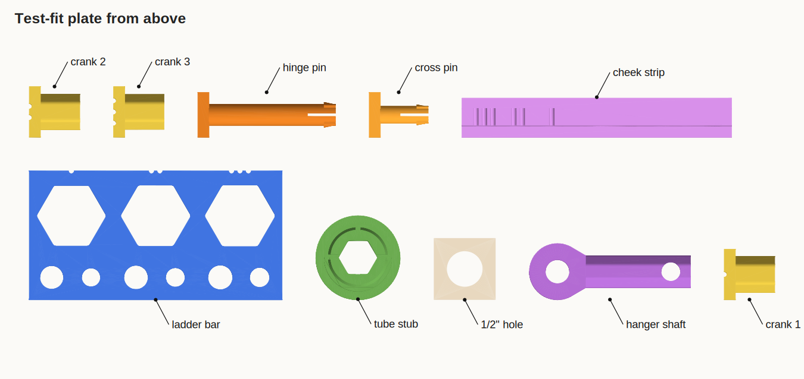
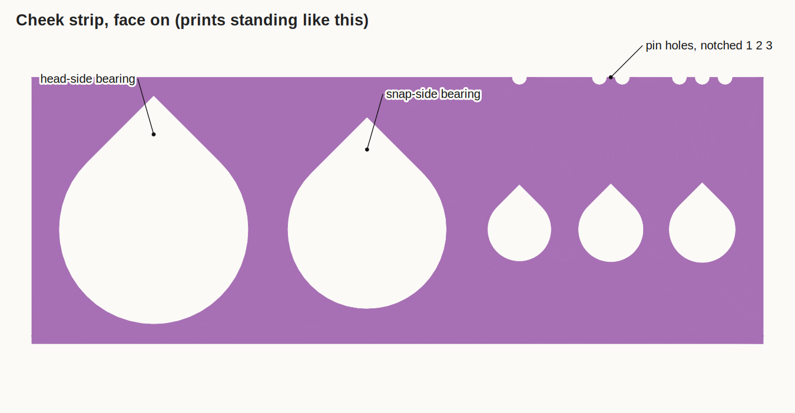
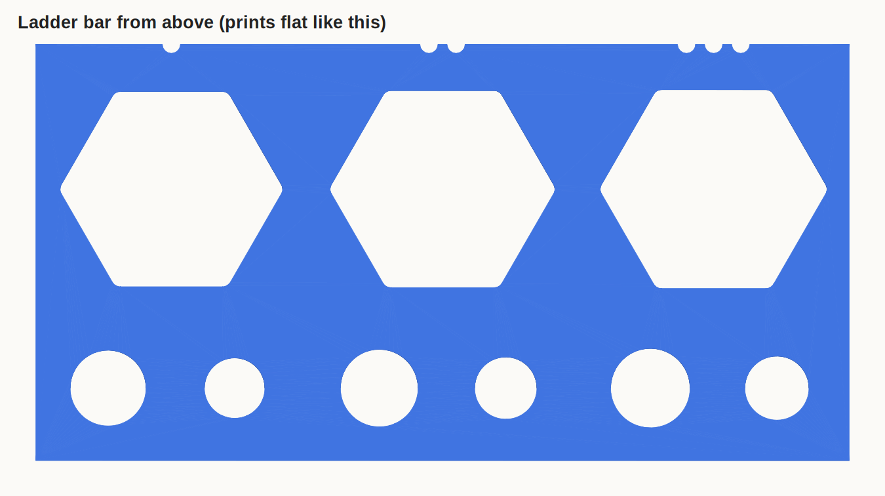

Which piece on the test-fit plate goes into which, how each fit should feel, and what to report back. This is round two, after the first plate came out too tight.
Round two
What changed since the first plate
Corners filleted. Every hex and octagon now has rounded corners, 1.5 mm on the male and 1.0 on the hole, so the ringing at a sharp corner has nowhere to land. A male corner still clears the hole's corner.
Hexes: 0.8 clearance across the flats, up from 0.3.
Round fits loosened. Axle-tube bearings 0.9 on diameter (was 0.6). Lock and hinge holes 8.6 with 7.6 pins (were 8.4 and 7.8). Cross-pin hole 6.9 with a 6.1 pin (were 6.6 and 6.2).
Snaps halved. The tube's lip and the pin tips now overlap their hole's edge by 0.15 mm each side, about half as much as before.
Size ladders. The hex holes, the crank hex and the pin holes each come in three sizes, marked by 1, 2 or 3 notches. One notch is 0.2 mm tighter than the design, two is the design, three is 0.2 looser.
Plate: 4h 49m, 41 g PLA, 4 mm brim. File: reel-test_fit.gcode
Find the pieces
What's on the plate

The plate from above. Cheek strip, ladder bar, tube stub, hanger shaft, hinge pin, cross pin, three crank stubs, and a nominal 1/2" hole.

Cheek strip, the way the chassis cheeks print. From left: head-side bearing hole, snap-side bearing hole, then three pin holes with 1, 2 and 3 notches above them.

Ladder bar, the way the wheel and the lying shaft print. Three columns notched 1, 2, 3. Each has a wheel hex hole on top, and below it a pin hole (the larger) and a cross-pin hole (the smaller).
The map
What goes into what
Left goes into right. Try each ladder in all three sizes and note the one that feels right. The design size is always the middle one (2 notches).
1 2 3 three sizes, tight to loose
Axle tube
Tube stub, wide endØ24.0 bearing
Cheek strip, big holeØ24.9
Turns freely with a little play.real part: tube in the head-side cheek
Tube stub, slotted endØ20.0 + lip
Cheek strip, middle holeØ20.9
A firm thumb push, a click, then it turns and stays.real part: tube's snap end in the far cheek
Tube stub, hex middle21.0 across flats
Ladder bar, hex holes1 2 321.6 · 21.8 · 22.0
Slides in by hand and doesn't rock.real part: tube driving the wheel
Crank
Crank stubs1 2 311.6 · 11.4 · 11.2 across flats
Tube stub, hex socket12.2 across flats
Slides in and pulls out by hand, and turns the tube without slipping.real part: crank in the axle tube
Slides through, the snap tip clicks.compare with the shaft's hole below
Cross pinØ6.1
Hanger shaft, hole near the tipØ6.9
Slides through, clicks, and holds the shaft up.real part: the cross pin above the shelf
Hanger shaft
Hanger shaft, octagon11.4 across flats
1/2" hole plate, then your shelfØ12.7
Slides through and turns. The shelf's drilled hole is the one that counts.real part: the shaft in the shelf
For each ladder, which notch count feels right: wheel hex holes, crank stubs, cheek pin holes, ladder-bar pin holes, cross-pin holes. Then anything else that's still tight, loose, or won't snap. Copy it and paste it into the chat. Notes stay in this browser only.